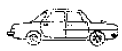
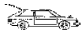
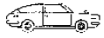
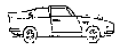
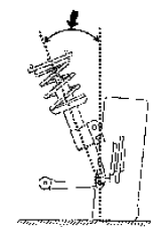
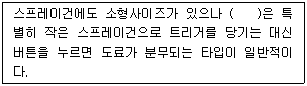

자동차차체수리기능사 (2014-04-06 기출문제)
1과목: 자동차공학
1. 자동차의 차체 모양에 따른 분류로 노치백 세단(Notch Back Sadan)의 형상은?




(정답률: 75%)

2. 배압(Back Pressure)의 설명으로 가장 거리가 먼 것은?
- 배압은 일종의 피스톤 운동에 저항하는 압력이다.
- 배압의 증가는 곧 출력의 증가를 초래한다.
- 소음기와 같은 배기계통의 막힘이 배압 증가의 원인이 될 수 있다.
- 크랭크케이스내의 압력 증가는 배압 상승의 원인이 될 수 있다.
(정답률: 79%)
3. 자동차의 프레임 높이에 대한 설명으로 옳은 것은?
- 축거의 중앙에서 측정한 접지면과 프레임 윗면까지의 높이
- 축거의 가장 낮은 부위에서 측정한 프레임 하단부까지의 높이
- 축거의 가장 낮은 부위에서 측정한 프레임 윗면까지의 높이
- 축거의 중앙에서 측정한 접지면과 프레임 하단부까지의 높이
(정답률: 63%)
4. 차체 각종 패널에서 강판표면에 크라운 성형을 부여하는 이유로 가장 거리가 먼 것은?
- 바디 전체에 강성이 향상된다.
- 바디 스타일을 아름답게 한다.
- 각 패널의 강도를 높인다.
- 패널의 부식발생을 억제한다.
(정답률: 61%)
5. 국제단위계(SI단위)에서 동점도의 단위는?
- rad/s
- m/s2
- m2/s
- Gal
(정답률: 61%)
6. 자동차 공학에서 일의 단위에 대한 설명으로 옳은 것은?
- 물체에 가해진 힘과 이동거리의 곱
- 시간의 흐름에 따라 증가하는 속도
- 단위 면적당 받는 힘의 크기
- 순수한 물 1그램을 1℃ 올리는데 필요한 열량
(정답률: 80%)
7. 긴 내리막길 주행 시 브레이크의 연속사용으로 인해 드럼과 슈가 과열되어 브레이크 성능이 현저히 저하되는 현상은?
- 페이드 현상
- 노스 다운 현상
- 퍼컬레이션 현상
- 베이퍼 록 현상
(정답률: 77%)
8. 그림은 자동차를 앞에서 보았을 때 앞바퀴와 현가장치의 그림으로 화살표의 휠 알라인먼트 요소는?

- 셋백
- 캐스터
- 킹핀 경사각
- 스러스트 각
(정답률: 70%)
9. 브레이크가 작동되었음을 알리는 등은?
- 브레이크 오일 경고등
- 계기등
- 후진등
- 제동등
(정답률: 87%)
10. 내연기관 작동 시 실린더내의 압력과 체적의 관계를 나타내는 선도는?
- 밸브개폐시기선도
- 지압선도
- 변속선도
- 연소선도
(정답률: 71%)
11. 합성수지 중 열경화성 수지로 옳은것은?
- 폴리 스티렌
- 폴리 에틸렌
- 아크릴 수지
- 페놀 수지
(정답률: 55%)
12. 순철의 결정구조(동소체)로 틀린것은?
- α철
- β 철
- γ 철
- δ 철
(정답률: 73%)
13. 내마멸성이 좋고 내연기관의 실린더, 피스톤 링 재료로 사용되는 주철은?
- 고력 합금주철
- 내열 주철
- 내마멸성 합금주철
- 내식 내열주철
(정답률: 86%)
14. 45° 로 자른 원뿔의 전개도는 어떤 방법을 이용하여 그리는 것이 편리한가?
- 평행선법
- 삼각형법
- 방사선법
- 혼합법
(정답률: 68%)
15. 일반적으로 고장력 강판이 고장력의 특성을 잃어버리는 온도는?
- 300℃ 이상부터
- 600℃ 이상부터
- 900℃ 이상부터
- 1100℃ 이상부터
(정답률: 69%)
16. 피복 금속 아크 용접의 직류 역극성에 대한 내용으로 틀린 것은?
- 용접봉에 - 극 , 모재에 + 극
- 모재의 용입이 얕다
- 용접봉의 용융이 빠르다
- 비드의 폭이 넓다
(정답률: 74%)
17. 차체패널 중 플랜지 부위의 플러그 용접 후 덧살 부분을 제거할 때 가장 적당한 공구는?
- 디스크 샌더페이퍼
- 디스크 와이어 브러쉬
- 디스크 그라인더
- 페이퍼 그라인더
(정답률: 77%)
18. 뜨임의 목적으로 틀린 것은?
- 경도는 낮아지나 인성이 좋아진다.
- 조직 및 기계적 성질을 안정화 한다.
- 잔류응력을 적게 하거나 제거한다.
- 탄성한도를 감소시킨다.
(정답률: 67%)
19. 금속의 용해잠열이 가장 높은 것은?
- AI
- Mg
- Pt
- Pb
(정답률: 69%)
20. 기계제도의 단면 표시법 중 얇은 판의 단면 표시법으로 옳은 것은?
- 물체 전체를 나타내기가 복잡하므로 부분적으로만 나타낸다.
- 물체의 기본중심선을 기준으로 하여 1/2 절단한다.
- 물체를 나타내기 힘들기 때문에 90도 회전시켜 나타낸다.
- 물체를 하나의 굵은 실선으로만 나타낸다.
(정답률: 66%)
2과목: 자동차차체정비
21. 금속이 상온가공에 의하여 강도, 경도가 커지고 연신율이 감소하는 성질은?
- 가공경화
- 시효경화
- 취성
- 전성
(정답률: 80%)
22. 시트패드를 만드는 재료이며 야자섬유대신에 폴리에스테르의 화학섬유를 우레탄계의 접착제로 굳힌 재료는?
- PUR
- 탄성 우레탄
- 팜록
- ABS
(정답률: 65%)
23. 다음 비철금속 재료 중에서 비중이 가장 낮은 것은?
- 알루미늄(AI)
- 니켈(Ni)
- 구리(Cu)
- 마그네슘(Mg)
(정답률: 66%)
24. 연삭작업에서 연삭 깊이가 가장 깊은 것은?
- 거친 연삭
- 다듬질 연삭
- 경질 연삭
- 광택내기
(정답률: 85%)
25. CO2 용접에서 용입 부족의 원인이 아닌 것은?
- 루트 간격이 너무 좁다.
- 용접전류가 낮다.
- 와이어 공급이 너무 빠르다.
- CO2 가스의 순도가 높다.
(정답률: 68%)
26. 트램 트랙킹 게이지의 작업상 주의사항으로 틀린것은?
- 측정자는 가급적 길게 한다.
- 홀 중심, 끝부분을 이용한다.
- 계측할 홀에 확실하게 고정한다.
- 측정점의 높이 차가 있으면 오차가 생기기 쉽다.
(정답률: 88%)
27. 자동차 차체 앞면 중앙부에 외력이 가해졌을 때 손상 점검 부위로 거리가 먼 것은?
- 라디에이터 코어 서포트와 좌우 후드레지 패널부근 점검
- 좌우 휀더 에이프런 패널 안쪽부분의 변형 유무 점검
- 프론트 크로스 멤버와 좌우 사이드 맴버가 붙어 있는 부근 점검
- 뒤 트렁크 부위의 리어 크로스 맴버의 뒤틀림 점검
(정답률: 82%)
28. ( )에 들어갈 건의 이름은?

- 피스건
- 흡상식건
- 중력식건
- 압송식건
(정답률: 78%)
29. 차체손상 분석을 할 때 주의 깊게 보아야 할 위치와 관련이 없는 곳은?
- 응력이 완화되는 부위
- 충격이 직접 가해진 부위
- 충격이 가해진 곳의 내측 부위
- 플라스틱 등 파손이 되기 쉬운 부품
(정답률: 75%)
30. 사고차량의 프레임 수정작업시 기본적으로 고정부분으로 옳은 것은?
- 크로스 맴버 부근
- 현가장치의 가장 튼튼한 부분
- 프레임에 부착된 견인 고리 부위
- 사이드 실 하단 좌 우측의 전, 후 플랜지 부분
(정답률: 64%)
31. 판금 가공의 특징에 속하지 않는 것은?
- 복잡하고 어려운 형상을 쉽게 제작 할 수 있다
- 주로 철을 녹여 사용하기 때문에 무게가 무겁다
- 제품의 표면이 아름답고 표면처리가 쉽다
- 대량생산이 가능하다
(정답률: 60%)
32. 자동차 유리 부착방법의 종류가 아닌 것은?
- 접착식
- 글로뷸라식
- 리머 마운틴식
- 플래시 마운트식
(정답률: 72%)
33. 스포트 용접부의 도막제거와 좁은 홈의 도막연마에 사용되는 샌드는?
- 에어샌드
- 벨트 샌더
- 디스크 샌더
- 스트레이트 라인 샌더
(정답률: 59%)
34. 일체형 차체(모노코크 바디)의 특징을 설명한 것 중 틀린 것은?
- 단독 프레임이 없어 차량중량이 가볍다.
- 서스펜션을 보디가 직접 지지하지 않기 때문에 소음 및 진동을 낮출 수 있다.
- 구조상으로 바닥면이 낮아서 실내공간이 넓다.
- 휘고, 굽고, 비틀림에 강하고 충격흡수 효과가 높다.
(정답률: 70%)
35. 금속도장에 관한 설명으로 틀린 것은?
- 물체보호는 도장 최대의 목적이다.
- 아크릴 수지는 천연수지를 용제에 용해시켜 만든 것으로 도막이 약하다.
- 프라이머의 주목적은 부착 및 방청이다.
- 실러는 찌그러지거나 오므라드는 것을 방지하며 흡입 방지를 하는데 사용된다.
(정답률: 68%)
36. 차체수리용 포토파워의 기능으로 틀린것은?
- 누르기 작업
- 인장작업
- 굽힘 작업
- 절단작업
(정답률: 72%)
37. 프레임 기준선 중 높이치수의 기준이 되는 것은?
- 트램 라인
- 하이트 라인
- 데이텀 라인
- 게이지 라인
(정답률: 81%)
38. 차체 계측의 조건 및 방법에 대한 내용으로 틀린 것은?
- 차체를 수평으로 인장
- 차체를 수평으로 고정
- 차체 계측기기 사용
- 차체 치수도 활용
(정답률: 72%)
39. 평면으로 된 판재를 사용하여 이음매 없는 원통이나 각통 모양의 그릇을 만드는 작업은?
- 컬링
- 드로잉
- 트리밍
- 브로칭
(정답률: 76%)
40. 자동차 보수도장 시 필요한 래커퍼티의 설명으로 옳은 것은?
- 프라이머 스페이서 적용 후 남아있는 금이나 불안전한 부분을 매우는데 사용된다.
- 2액형 퍼티로 주제와 경화제를 섞어 사용한다.
- 넓은 부위를 사용하는데 적당하다.
- 건조를 60℃에서 약 30분 정도 강제 건조시킨 후 샌딩을 해야 한다.
(정답률: 65%)
3과목: 안전관리
41. 프레임의 일반 기준선으로 틀린 것은?
- 타이어 중심 면
- 앞 뒤 차축의 중심선
- 프레임의 중앙 수평부분의 윗면
- 리어 스프링 브래킷 중심을 통한 선
(정답률: 58%)
42. 자동차차체조립 공정에서 가장 많이 사용하는 용접은?
- 탄산가스 아크 용접
- 전기저항 스포트 용접
- 가스 용접
- 가스 실드 아크 용접
(정답률: 79%)
43. 전기저항 스포트 용접시 접합면의 일부가 녹아 바둑알 모양의 단면으로 변화된 것을 무엇이라 하는가?
- 너겟
- 헤밍
- 크라운
- 홀
(정답률: 74%)
44. 차체부품 제작 시 리벳 구멍의 지름은 리벳 몸체 지름보다 어느정도 크게 하는가?
- 1~ 1.2mm
- 2~ 2.2mm
- 3~ 3.2mm
- 4~ 4.2mm
(정답률: 74%)
45. 도료의 성분 가운데 그 자신은 도막이 되지 못하나 도막을 형성시키는 역할을 하는 성분은?
- 안료
- 수지
- 첨가제
- 용제
(정답률: 54%)
46. 도장부스의 조건으로 틀린 것은?
- 강제급기, 강제배기의 상하로 피트를 가져야 한다.
- 내화구조로 밀폐 할 수 잇어야 한다.
- 내부를 점검하는 점검창이 1개소 이상이어야 한다.
- 도막의 건조를 위해 내부 공기 유속은 10m/s 이상이어야 한다.
(정답률: 79%)
47. 자동차 차체패널 제거부분의 마무리 작업으로 틀린것은?
- 용접부위는 샌더 등으로 연마
- 접합면의 부식 및 이물질 제거
- 패널 접합면의 정형 및 변형수정
- 도막 제거 후 접합면을 실러 도포로 방청 처리
(정답률: 62%)
48. 도장물을 가열하여 도막의 산화 중합을 촉진시키는 방법으로 단 시간에 굳어지며 부착력이 좋은 도막이 형성되는 건조방법은?
- 휘발 건조법
- 산화 건조법
- 열 건조법
- 중합 건조법
(정답률: 71%)
49. 차량의 충돌과 접촉사고 시 충격을 흡수 및 완화하여 차체를 보호하는 것으로 외형의 미적 부분을 완성하는 부품은?
- 펜더
- 범퍼
- 도어
- 후드
(정답률: 90%)
50. 바디 프레임 수정기 중 바퀴가 달려있어 차체정비를 하는 차량까지 자유로이 이동시켜 작업장 바닥이나 기둥 등에 고정하지 않아도 되는 것은?
- 폴식 바디프레임 수정기
- 이동식 바디프레임 수정기
- 정치식 바디프레임 수정기
- 바닥식 바디프레임 수정기
(정답률: 89%)
51. 산소용접에서 안전한 작업수칙으로 옳은 것은?
- 기름이 묻은 복장으로 작업한다.
- 산소밸브를 먼저 연다.
- 아세틸렌 밸브를 먼저 연다.
- 역화 하였을 때는 아세틸렌 밸브를 빨리 잠근다.
(정답률: 70%)
52. 공기압축기 및 압축공기 취급에 대한 안전수칙으로 틀린 것은?
- 전기배선, 터미널 및 전선 등에 접촉 될 경우 전기 쇼크의 위험이 있으므로 주의하여야 한다.
- 분해 시 공기압축기, 공기탱크 및 관로 안의 압축공기를 완전히 배출한 뒤에 실시한다.
- 하루에 한번씩 공기탱크에 고여 있는 응축수를 제거한다.
- 작업 중 작업자의 땀이나 열을 식히기 위해 압축공기를 호흡하면 작업효율이 좋아진다.
(정답률: 86%)
53. 일반가연성 물질의 화재로서 물이나 소화기를 이용하여 소화하는 화재의 종류는?
- A급 화재
- B급 화재
- C급 화재
- D급 화재
(정답률: 76%)
54. 기계부품에 작용하는 하중에서 안전율을 가장 크게 하여야 할 하중은?
- 정 하중
- 교번 하중
- 충격 하중
- 반복 하중
(정답률: 82%)
55. 줄 작업에서 줄에 손잡이를 꼭 끼우고 사용하는 이유는?
- 평형을 유지하기 위해
- 중량을 높이기 위해
- 보관에 편리 하도록 하기 위해
- 사용자에게 상처를 입히지 않기 위해
(정답률: 88%)
56. 차체수정 작업에서 클램프의 취급 시 안전에 유의 할 사항으로 틀린 것은?
- 정기적으로 점검, 청소를 해 주어야 한다.
- 미끄러지는 원인이 되기 때문에 볼트를 힘껏 조여 주어야 한다.
- 오일 등을 주유하면 오래 사용할 수 있다.
- 견인 방향과 톱니의 중심은 연장선상에서 어긋나야 안전하다.
(정답률: 76%)
57. 작업장 작업환경에 대한 안전대책으로 옳은 것은?
- 퍼티 연마시 흡진기를 사용하면 번거로운 흡진 마스크 착용을 하지 않아도 된다.
- 도장실 내부 천정의 필터는 점성이 없는 것을 사용해야 한다.
- 좁은 장소에서 여러사람이 용접시 다른 사람에게 영향을 줄수 있으므로 차광막을 사용한다.
- 차체수리 작업장은 분진이 없으므로 환기장치가 불필요하다.
(정답률: 76%)
58. 다음 중 가죽 안전화의 구비조건 중 설명이 틀린 것은?
- 사이즈가 맞고 안전화 앞쪽 끝에 발가락이 닿지 않을 것
- 발이 편하고 기분이 좋으며 작업이 쉬울 것
- 잘 구부러지지 않고 튼튼하여야 할 것
- 기능이 편하고 가벼울 것
(정답률: 73%)
59. 작업 중 장갑을 착용해도 되는 작업은?
- 목공기게 작업
- 해머 작업
- 선반 작업
- 중량물 운반작업
(정답률: 77%)
60. 전기 용접기가 누전이 되었을 때 가장 옳은 행동은?
- 전압이 낮기 때문에 계속 용접하여도 된다.
- 스위치는 손대지 않고 누전된 부분을 절연시킨다.
- 용접기만 만지지 않으면 된다.
- 스위치를 끄고 누전된 부분을 찾아 절연 시킨다.
(정답률: 88%)